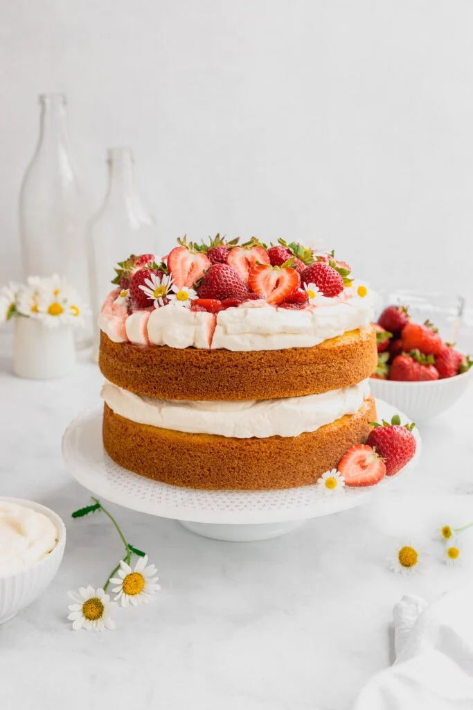

Traditional Cake
Most traditional cake recipes are made with ingredients such as shortening, eggs, baking powder and the necesities like flour and sugar. Many basic recipes are vanilla, chocolate or red velvet, but you can spice up a basic recipe with inclusions and a variety of flavors. Many recipes, like the one below, the batter is made from scratch.
How to Bake a Cake:
- Prepare baking pans.
- Allow ingredients to reach room temperature.
- Preheat the oven.
- Stir dry ingredients together.
- Combine butter and sugar.
- Alternate adding wet and dry ingredients together.
- Pour batter into pans and bake until golden brown.
Strawberries and Cream Cake
This strawberries and cream cake is a layered cake that is topped with strawberry jam and homeade whipped cream.
- Step 1: Make a vanilla cake base and bake batter until golden brown.
- Step 2: Whip heavy whipping cream with vanilla extract and powdered sugar until stiff peaks form.
- Step 3: Slice fresh strawberries to layer over the whipped cream.
- Step 4: Fill layers of cake with filling.
- Step 5: Frost cake with left over whipped cream and decorate the top with strawberry slices.